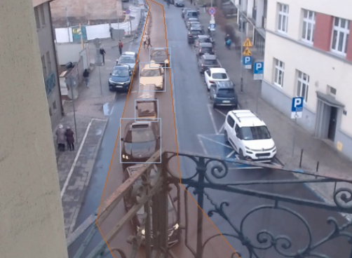
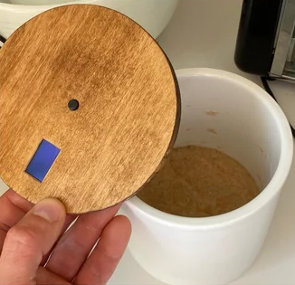
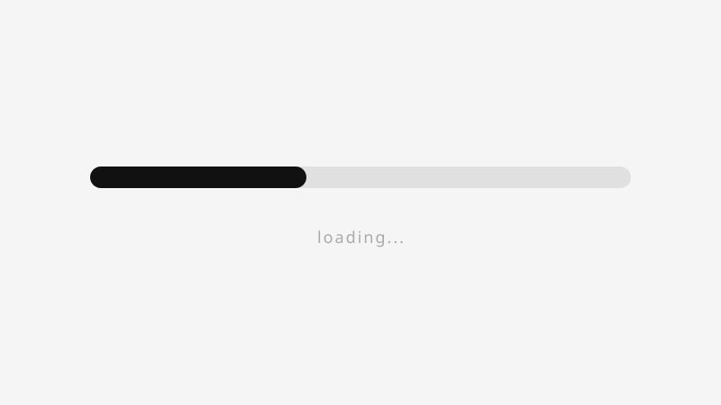
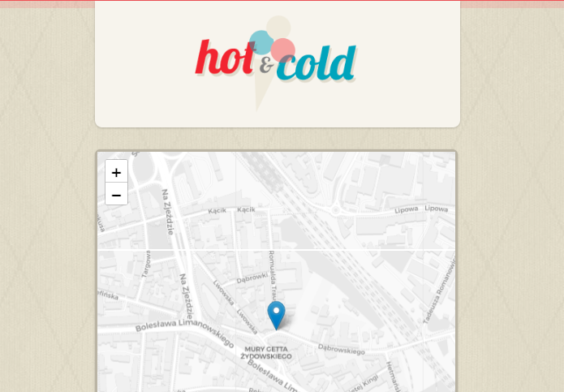

Dabrowskiego
Real-time traffic congestion monitor for Dąbrowskiego street in Kraków. Raspberry Pi captures footage every 10s, YOLOv8 detects vehicles, and a React dashboard shows a live feed, congestion badge, and daily history.

Real-time traffic congestion monitor for Dąbrowskiego street in Kraków. Raspberry Pi captures footage every 10s, YOLOv8 detects vehicles, and a React dashboard shows a live feed, congestion badge, and daily history.


An inline delay proxy for HTTP resources. Simulate slow network conditions on specific assets to test how your app holds up.
View on GitHub →
A GPS-based take on the classic hot-and-cold guessing game. One player hides a location; others use their phone to navigate closer to it.